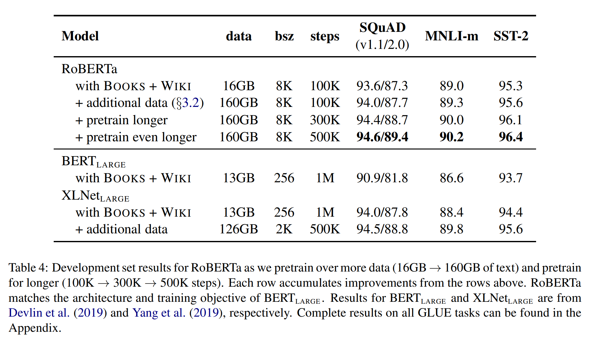

前置知识
Epoch
当一个完整的数据集通过了神经网络一次并且返回了一次，这个过程称为一次epoch。（也就是说，所有训练样本在神经网络中都进行了一次正向传播和一次反向传播 ）
再通俗一点，一个Epoch就是将所有训练样本训练一次的过程。
然而，当一个Epoch的样本（也就是所有的训练样本）数量可能太过庞大（对于计算机而言），就需要把它分成多个小块，也就是就是分成多个Batch 来进行训练。
Batch
批 / 一批样本。
Batch_Size
每批样本的大小。
Iteration
一次迭代。训练一个Batch就是一次Iteration（这个概念跟程序语言中的迭代器相似）
Perplexity
PPL是用在自然语言处理领域（NLP）中，衡量语言模型好坏的指标。它主要是根据每个词来估计一句话出现的概率，并用句子长度作normalize。PPL越小，一句我们期望的sentence出现的概率就越高。
Zero-shot learning
Zero-shot learning：零样本学习。
利用高维语义特征代替样本的低维特征，使得训练出来的模型具有迁移性。
舍去低维特征，不需要“面面俱到”，达到分类目的。
CNN
主要应用：图片处理。
背景：
- 图像需要处理的数据量太大，导致成本很高，效率很低
- 图像在数字化的过程中很难保留原有的特征，导致图像处理的准确率不高
结构：
卷积层：使用卷积核来过滤图像的各个小区域。
在具体应用中，往往有多个卷积核，可以认为，每个卷积核代表了一种图像模式，如果某个图像块与此卷积核卷积出的值大，则认为此图像块十分接近于此卷积核。如果我们设计了6个卷积核，可以理解：我们认为这个图像上有6种底层纹理模式，也就是我们用6中基础模式就能描绘出一副图像。
总结：通过卷积核的过滤提取出图片中局部的特征。
池化层：数据降维，避免过拟合。
全连接层：输出结果。
在全连接层之前可以有多个卷积层和池化层。
RNN
CNN 和普通的算法大部分都是输入和输出的一一对应，也就是一个输入得到一个输出。不同的输入之间是没有联系的。
RNN 跟传统神经网络最大的区别在于每次都会将前一次的输出结果，带到下一次的隐藏层中，一起训练。
问题：短期记忆影响较大，无法处理很长的输入序列；由于依赖前步输出，无法进行并行计算。
LSTM
LSTM 可以保留较长序列数据中的“重要信息”，忽略不重要的信息。这样就解决了 RNN 短期记忆的问题。
GRU
Gated Recurrent Unit – GRU 是 LSTM 的一个变体，他主要是在 LSTM 的模型上做了一些简化和调整，在训练数据集比较大的情况下可以节省很多时间。
Softmax
Softmax 是一种激活函数，它可以将一个数值向量归一化为一个概率分布向量，且各个概率之和为1。Softmax 可以用来作为神经网络的最后一层，用于多分类问题的输出。
Encoder-Decoder & Seq2Seq
Encoder-Decoder 模型
不是某种具体的算法，而是一类算法的统称。
机器学习的核心思路：将现实问题转化为数学问题，通过求解数学问题，从而解决现实问题。
需要说明的点：
- 无论输入输出长度如何，中间的向量C长度固定（这也是缺陷）。
- 根据不同的问题选择不同的 Encoder 和 Decoder，可以是一个 RNN，但通常是其变种 LSTM 或者 GRU。
应用：
- text - text
- audio - text
- image/video - text
Seq2Seq
字面意思，输入一个序列，输出一个序列。
特点：输入序列和输出序列的长度可变。
在 Seq2Seq 框架提出之前，深度神经网络在图像分类等问题上取得了非常好的效果。在其擅长解决的问题中，输入和输出通常都可以表示为固定长度的向量，如果长度稍有变化，会使用补零等操作。然而许多重要的问题，例如机器翻译、语音识别、自动对话等，表示成序列后，其长度事先并不知道。因此如何突破先前深度神经网络的局限，使其可以适应这些场景，成为了13年以来的研究热点，Seq2Seq 框架应运而生。
属于 Encoder-Decoder 的大范畴。
缺点：非常占内存；大数据量上不容易调参。
改进
Encoder-Decoder 模型的缺陷：
Encoder 和 Decoder 之间只有一个向量 C 来传递信息，且 C 的长度固定 → 输入信息过长时，会丢失掉一部分信息。
Attention 机制就是为了解决”信息过长，信息丢失”的问题。
引入了 Attention 机制的 Encoder-Decoder 模型
Encoder 不再将整个输入序列编码为固定长度的中间向量 C，而是编码为一个向量的序列。
在产生每一个输出的时候，都能够做到充分利用输入序列所携带的信息。
那么，什么是 Attention 机制？
Attention 机制
本质
关注全部 → 关注重点。
优点
参数少
模型复杂度相对 CNN、RNN 等更小，参数也更少，对算力要求较低。
速度快
解决了 RNN 不能并行计算的问题，Attention 机制的每一步计算都不依赖上一步的计算结果，因此可以和 CNN 一样并行处理。
效果好
Attention 机制引入之前：就像是遥远的记忆会变得模糊一样，长距离的信息会被弱化。
Attention 机制引入之后：挑重点进行处理，文本较长不妨碍抓住重点。
原理
简单理解：encoder 层的输出经过加权平均后再输入到 decoder 层中。
- 对 query 和 key 进行相似度计算，得到权值；
- 将权值进行归一化，得到直接可用的权重；
- 将权重和 value 进行加权求和。
类型
Transformer
整体架构
左边被”Nד的为 Encoder，右边被“N×”的为 Decoder。
Self-Attention
表达元素内部之间的 attention 关系，输入之间的 QKV 会互相影响。
Multi-Head Attention
”多头“：对同一key、value、query抽取不同信息，相当于平行复制后随机初始化参数，从而使每个 self-attention 模块具有不同的假设空间。
使用多个独立的 Attention 池化，合并每个 head 的输出得到最终输出。
目的：这种结构设计能让每个注意力机制通过 QKV 映射到不同的空间去学习特征，去优化每个词汇的不同特征部分，从而均衡同一种注意力机制可能产生的偏差，让词义拥有来自更多元的表达，实验表明可以从而提升模型效果。
Masked Multi-Head Attention
Decoder 对序列中某个元素进行输出时，不应该考虑该元素之后的元素。
↓ 通过掩码实现
计算 $x_i$ 输出时，假装当前序列长度为 $i$。
Position-wise Feed-Forward Networks
除了注意力子层，编码器和解码器中的每一层都包含一个全连接的前馈网络，该网络分别且相同地应用于每个位置。这包括两个线性转换，中间有一个 ReLu 激活。
作用：将输入形状由 (b, n, d) 变换为 (bn, d)、输出形状由 (bn, d) 变换为 (b, n, d)。避免了n 的变化导致的输入维度不稳定。
b: batchsize，多少个句子；
n: 序列长度，句子中有多少个字；
d: dimension，字是多少维。
Add & Norm
Add：
将 Multi-Head Attention 的输入与输出加起来。
Norm：
Layer Normalization。
不能用 Batch Normalization：
BN 是每个通道样本间归一化，LN 是每个样本通道间归一化。
有 b 句话，每句话有 len 个词，每个词由 d 个特征表示，BN 是对所有句子所有词的某一特征做归一化，LN 是对某一句话的所有词所有特征做归一化。
不同句子字数不同，无法进行句间归一化。
信息传递
将 Encoder 的输出 y1 ~ yn 分别给到 Decoder 中的每个块。
输入
Transformer 中的输入由 Word Embedding 和 Positional Embedding 相加得到。
Word Embedding
使用 Word2Vec、Glove等算法预训练得到，也可以在 Transformer 中训练得到。
Positional Embedding
表示单词出现在句子中的位置。
pos 表示单词在句中的位置，d 表示 PE 的维度（与 Word Embedding 一致），2i 表示偶数维度，2i+1 表示奇数维度。
为什么这样表示？
- 使 PE 能够适应比训练集里面所有句子更长的句子，假设训练集里面最长的句子是有 20 个单词，突然来了一个长度为 21 的句子，则使用公式计算的方法可以计算出第 21 位的 Embedding。
- 可以让模型容易地计算出相对位置，对于固定长度的间距 k，PE(pos+k) 可以用 PE(pos) 计算得到。因为 Sin(A+B) = Sin(A)Cos(B) + Cos(A)Sin(B), Cos(A+B) = Cos(A)Cos(B) - Sin(A)Sin(B)。
Pre-train Model
背景
标注资源稀缺而无标注资源丰富：某种特殊的任务只存在非常少量的相关训练数据，以至于模型不能从中学习总结到有用的规律。
思想
- 模型角度：模型参数不再是随机初始化，而是通过某些特定任务（如语言模型）进行预训练；
- 数据角度：将训练任务拆解成共性学习和特性学习两个步骤。
学习任务的分解
“预训练“的做法一般是将大量低成本收集的训练数据放在一起，经过某种预训方法去学习其中的共性，然后将其中的共性“移植”到特定任务的模型中，再使用相关特定领域的少量标注数据进行“微调”，这样的话，模型只需要从”共性“出发，去“学习”该特定任务的“特殊”部分即可。
举例理解：会说汉语→法律文献专业名词提取 vs 不会说汉语→法律文献专业名词提取。
先学习汉语，再进行法律文献专业名词提取→学习任务分解。
方法
自编码预训练（AE）：BERT，对应了 encoder 的预训练，更适合文本理解任务；
自回归预训练（AR）：GPT，对应了 decoder 的预训练，更适合文本生成任务。
BERT & RoBERTa
BERT (Bidirectional Encoder Representation from Transformers)
特点
BERT 不再像以往一样采用传统的单向语言模型或者把两个单向语言模型进行浅层拼接的方法进行预训练，而是采用新的 masked language model（MLM），以致能生成深度的双向语言表征。
优点
- 采用 MLM 对双向的 Transformer 进行预训练，以生成能融合左右上下文信息的深层双向语言表征。
- 预训练后，只需要添加一个额外的输出层进行微调，就可以在各种各样的下游任务中取得 state-of-the-art 的表现。在这过程中并不需要对 BERT 进行任务特定的结构修改。
预训练过程
MLM
MLM可以理解为完形填空，作者会随机mask每一个句子中15%的词，用其上下文来做预测，例如：my dog is hairy → my dog is [MASK]。
此处将hairy进行了mask处理，然后采用非监督学习的方法预测mask位置的词是什么，但是该方法有一个问题，因为是 mask 15%的词，其数量已经很高了，这样就会导致某些词在fine-tuning阶段从未见过，为了解决这个问题，作者做了如下的处理：
- 80%的时间是采用[mask]，my dog is hairy → my dog is [MASK]；
- 10%的时间是随机取一个词来代替mask的词，my dog is hairy -> my dog is apple；
- 10%的时间保持不变，my dog is hairy -> my dog is hairy；
使用随机词的原因：防止Transformer直接将[MASK]记为”hairy”，同时迫使模型更多地依赖于上下文信息来预测词汇。
Next Sentence Prediction
对 Sentence A 与其之后的 Sentence B 进行训练，其中 B 中50%的数据为 A 的下一条句子，剩余50%的数据为语料库中的随机句子。
使预训练的模型可以处理需要理解两个句子之间的关系的任务。
结构
BERT只使用了Transformer的Encoder模块，原论文中，作者分别用12层和24层Transformer Encoder组装了两套BERT模型，分别是：

其中层的数量（即 Transformer Encoder 块的数量）为 L，隐藏层的维度为 H，自注意头的个数为 A。在所有例子中，我们将前馈/过滤器（ Transformer Encoder 端的 feed-forward 层）的维度设置为 4H，即当 H=768 时是 3072；当 H=1024 是 4096。
输入
BERT的输入词向量是三个向量之和：
- Token Embedding：词向量。
- Segment Embedding：表明这个词属于哪个句子（NSP 需要两个句子）。
- Position Embedding：学习出来的 embedding 向量。这与 Transformer 不同，Transformer 中是预先设定好的值。
输出
BERT预训练模型的输出结果，无非就是一个或多个向量。下游任务可以通过精调（改变预训练模型参数）或者特征抽取（不改变预训练模型参数，只是把预训练模型的输出作为特征输入到下游任务）两种方式进行使用。
贡献
- 引入了Masked LM，使用双向 LM 做模型预训练；
- 为预训练引入了新目标 NSP，它可以学习句子与句子间的关系；
- 进一步验证了更大的模型效果更好： 12 —> 24 层；
- 为下游任务引入了很通用的求解框架，不再为任务做模型定制；
- 刷新了多项 NLP 任务的记录，引爆了NLP无监督预训练技术。
缺点
- [MASK]标记在实际预测中不会出现，训练时用过多[MASK]影响模型表现；
每个batch只有15%的token被预测，所以BERT收敛得比 left-to-right 模型要慢（它们会预测每个token）；
BERT对硬件资源的消耗巨大，大模型需要16个 tpu，历时四天；更大的模型需要64个 tpu，历时四天。
适用场景
- 句子或者段落的匹配类任务：Bert在预训练阶段增加了 NSP 任务，所以能够在预训练阶段学会一些句间关系的知识，而如果下游任务正好涉及到句间关系判断，就特别吻合 Bert 本身的长处。
- 适合解决输入长度不太长的NLP任务：而输入比较长的任务，典型的比如文档级别的任务，Bert解决起来可能就不太好。主要原因在于：Transformer的self attention机制因为要对任意两个单词做attention计算，所以时间复杂度是n平方，n是输入的长度。如果输入长度比较长，Transformer的训练和推理速度掉得比较厉害，于是，这点约束了Bert的输入长度不能太长。所以对于输入长一些的文档级别的任务，Bert就不容易解决好。结论是：Bert更适合解决句子级别或者段落级别的NLP任务。
RoBERTa（ A Robustly Optimized BERT Pretraining Approach）
从模型上来说，RoBERTa基本没有什么太大创新，主要是改变了预训练的方法。
静态 Masking vs 动态 Masking
Bert对每一个序列随机选择15%的Tokens替换成[MASK]，但整个训练过程，这15%的Tokens一旦被选择就不再改变。
RoBERTa一开始把预训练的数据复制10份，每一份都随机选择15%的Tokens进行Masking，也就是说，同样的一句话有10种不同的mask方式。然后每份数据都训练N/10个epoch。这就相当于在这N个epoch的训练中，每个序列的被mask的tokens是会变化的。

with NSP vs without NSP
RoBERTa去除了NSP，而是每次输入连续的多个句子，直到最大长度512（可以跨文章）。这种训练方式叫做（FULL - SENTENCES），而原来的Bert每次只输入两个句子。实验表明在MNLI这种推断句子关系的任务上RoBERTa也能有更好性能。
更大的mini-batch
原本的 BERTbase 的batch size是256，训练 1M 个steps。RoBERTa 的 batch size 为 8k。作者借鉴了在机器翻译中，用更大的batch size配合更大学习率能提升模型优化速率和模型性能的现象，并且也用实验证明了确实Bert还能用更大的batch size。
更多的数据，更长时间的训练
借鉴 XLNet 用了比 Bert 多10倍的数据，RoBERTa也用了更多的数据，配合更长时间的训练，性能再次提高。

GPT 系列
Generative Pre-trained Transformer（GPT）系列是由 OpenAI 提出的一系列非常强大的预训练语言模型。
GPT模型的训练需要超大的训练语料，超多的模型参数以及超强的计算资源。GPT系列的模型结构秉承了不断堆叠transformer的思想，通过不断的提升训练语料的规模和质量，提升网络的参数数量来完成GPT系列的迭代更新的。GPT也证明了，通过不断的提升模型容量和语料规模，模型的能力是可以不断提升的。
GPT-1
背景
在 GPT-1 之前，传统的 NLP 模型往往使用大量的数据对有监督的模型进行任务相关的模型训练，而有监督学习的任务存在两个缺点：
- 需要大量的标注数据，高质量的标注数据往往很难获得，因为在很多任务中，图像的标签并不是唯一的或者实例标签并不存在明确的边界；
- 根据一个任务训练的模型很难泛化到其它任务中，这个模型只能叫做“领域专家”而不是真正的理解了NLP。
思想
先通过在无标签的数据上学习一个生成式的语言模型，然后再根据特定的任务进行微调，即无监督的预训练+有监督的模型微调。
结构
- 分类任务：将起始和终止token加入到原始序列两端，输入transformer中得到特征向量，最后经过一个全连接得到预测的概率分布；
- 自然语言推理：将前提（premise）和假设（hypothesis）通过分隔符（Delimiter）隔开，两端加上起始和终止token。再依次通过transformer和全连接得到预测结果；
- 语义相似度：输入的两个句子，正向和反向各拼接一次，然后分别输入给transformer，得到的特征向量拼接后再送给全连接得到预测结果；
- 问答和常识推理：将 n 个选项的问题抽象化为 n 个二分类问题，即每个选项分别和内容进行拼接，然后各送入transformer和全连接中，最后选择置信度最高的作为预测结果。
数据集
GPT-1使用了 BooksCorpus 数据集，这个数据集包含 7,000 本没有发布的书籍。作者选这个数据集的原因有二：1. 数据集拥有更长的上下文依赖关系，使得模型能学得更长期的依赖关系；2. 这些书籍因为没有发布，所以很难在下游数据集上见到，更能验证模型的泛化能力。
GPT-2
GPT-2的目标旨在训练一个泛化能力更强的词向量模型，它并没有对GPT-1的网络进行过多的结构的创新与设计，只是使用了更多的网络参数和更大的数据集。
核心思想
作者认为，当一个语言模型的容量足够大时，它就足以覆盖所有的有监督任务，也就是说，任何有监督任务都是语言模型的一个子集，当模型的容量非常大且数据量足够丰富时，仅仅靠训练语言模型的学习便可以完成其他有监督学习的任务。
数据集
GPT-2 的文章取自于 Reddit 上高赞的文章，命名为 WebText。数据集共有约800万篇文章，累计体积约 40G。为了避免和测试集的冲突，WebText 移除了涉及 Wikipedia 的文章。
贡献
验证了通过海量数据和大量参数训练出来的词向量模型有迁移到其它类别任务中而不需要额外的训练的能力。
GPT-3
强大：仅仅需要zero-shot或者few-shot，就可以在下游任务表现的非常好。
巨巨巨烧钱：1750亿的参数，31个分工明确的作者，超强算力的计算机（ 285,000 个CPU， 10,000 个 GPU），1200万的训练费用，45TB 的训练数据（维基百科的全部数据只相当于其中的 0.6% ）。
meta-learning（元学习）
对于一个少样本的任务来说，模型的初始化值非常重要，从一个好的初始化值作为起点，模型能够更快收敛。
元学习的核心思想在于通过少量的数据寻找一个合适的初始化范围，使得模型能够在有限的数据集上快速拟合，并获得不错的效果。
In-context learning（情境学习）
Without fine-tuning
从理论上讲GPT-3也是支持fine-tuning的，但是fine-tuning需要利用海量的标注数据进行训练才能获得比较好的效果，但是这样也会造成对其它未训练过的任务上表现差，所以GPT-3并没有尝试fine-tuning。
模型容量
实验结果表明，三个学习方式的效果都会随着模型容量的上升而上升，且few shot > one shot > zero shot。
数据集
GPT-3共训练了5个不同的语料，分别是低质量的Common Crawl，高质量的 WebText2，Books1，Books2 和 Wikipedia，GPT-3根据数据集的不同的质量赋予了不同的权值，权值越高的在训练的时候越容易抽样到。
结构
GPT-3沿用了GPT-2的结构，但是在网络容量上做了很大的提升，如采用了96层的多头 transformer。
缺点
- 对于一些命题没有意义的问题，GPT-3不会判断命题有效与否，而是拟合一个没有意义的答案出来；
- 由于 40TB 海量数据的存在，很难保证GPT-3生成的文章不包含一些非常敏感的内容，例如种族歧视，性别歧视，宗教偏见等；
- 受限于transformer的建模能力，GPT-3并不能保证生成的一篇长文章或者一本书籍的连贯性，存在下文不停重复上文的问题。
总结
GPT 系列从1到3，通通采用的是 transformer 架构，可以说模型结构并没有创新性的设计。
本质是通过海量的参数学习海量的数据，然后依赖transformer强大的拟合能力使得模型能够收敛。
野生 GPT 系列
为了打破 OpenAI 和微软对自然语言处理 AI 模型的垄断，EleutherAI 研究并开源了一系列可以与类似规模的 GPT-3 模型相媲美的自然语言处理 AI 模型。
GPT-Neo
EleutherAI 在 2021 年 3 月发布了 27 亿参数的 GPT-Neo 模型，这是他们对类 GPT 系统的第一个实现。GPT-Neo 是在 TensorFlow 中构建的，并通过 Mesh TensorFlow 并行库在 TPU 上训练。
模型参数级别：125 M，350 M，1.3 B，2.7 B。
GPT-Neo 开源模型里较大的版本也只达到了 GPT-3 商用版里最小模型的参数量。
训练效率低 + GPU 资源变多 → GPT-NeoX。
GPT-J
GPT-J 是一个基于 GPT-3、由 60 亿个参数组成的自然语言处理 AI 模型。该模型在一个 800 GB 的开源文本数据集上进行训练，能够与类似规模的 GPT-3 模型相媲美。
GPT-J 使用新库 Mesh-Transformer-JAX 来训练，该库没有使用像 TensorFlow 这样的特定深度学习框架，而是使用 Google 的 JAX 线性代数框架。
与 GPT-Neo 模型相比，GPT-J 的训练效率提高了 125%。在几个 Down-Streaming 工作负载的零点性能方面，GPT-J 是公开的 Transformer LM 中表现最好的。
GPT-NeoX
The Pile
这是一个 825 GB 的用于训练的多样化文本数据集。The Pile 由 22 个不同的高质量子集构成，包括现有的和新建的，其中许多来源于学术领域或各专业领域。
硬件
此前，在 GPT-Neo 和 GPT-J 的训练过程中，EleutherAI 都是通过 TPU Research Cloud (TRC) 访问抢占式 TPU，但想在合理的时间内用 TRC TPU 训练超过数百亿参数的模型是不现实的。
2021 年 1 月，EleutherAI 宣布与 CoreWeave 达成合作，CoreWeave 承诺为 GPT-NeoX-20B 模型训练提供 GPU 资源。研究者透露，他们在 96 个 A100 上完成了 GPT-NeoX-20B 的训练，训练成本约 86 万美元。
性能
GPT-NeoX-20B 总体优于 GPT-J-6B 等，但和 DaVinci 相比还存在一定差距。
minGPT
使用 PyTorch 对 GPT 的重新实现，包括训练和推断。minGPT 试图变得小、干净、可解释和有教育意义，因为目前大多数可用的GPT模型实现可能有点杂乱。minGPT 只有大约300行代码。所要做的就是将一个索引序列输入到一个Transformer中，然后该序列中下一个索引的概率分布出来。作者指出，GPT 中大多数的复杂性只是为了提高效率而巧妙地处理批处理。
自然语言-编程语言预训练模型（NL-PL）
CodeBERT
将BERT应用到了Python、PHP、Java、JavaScript、Go、Ruby等编程语言的代码搜索和生成任务当中。
自然语言搜索代码
通过自然语言query查找到所需的代码块的实现和搜索引擎（通过自然语言query来查找所需网页）类似。
作者在 CodeSearchNet 语料库上对CodeBERT进行了预训练并做微调，这是一个包含了 6 种较为普遍的代码语言（分别为Ruby、JavaScript、Go、Python、Java、PHP）的语料库。最终，在自然语言代码搜索任务中取得了 SOTA 的结果。
代码生成
CodeBERT抓住了自然语言和编程语言之间的语义联系。
结构
在模型的整体架构上，CodeBERT 并未脱离 BERT 和 Roberta 的思想。和大多数工作类似，作者使用了多层双向 Transformer。
在预训练阶段，总共设计了两部分输入，一个是自然语言文本，另一个是编程语言的代码。在模型训练的设计上，其主要包括两个目标：
- 掩码语言建模（MLM）。将NL-PL对作为输入，随机为NL和PL选择位置进行掩码，然后用特殊的掩码Token进行替换。注意，掩码语言建模的任务是预测出被掩码的原始Token。
- 可替换Token检测（Replaced Token Detection (RTD)）。在这部分有两个数据生成器，分别是NL生成器和PL生成器，这两个生成器都用于随机掩码位置集（randomly masked positions）生成合理的备选方案。另外，还有一个学习生成器用来检测一个词是否为原词，其背后原理是一个二进制分类器。
模型训练的最后一步是模型微调，具体操作是在NL-PL任务中使用不同的CodeBERT设置。例如在自然语言代码搜索中，会使用与预训练阶段相同的输入方式。而在代码到文本的生成中，使用编码器-解码器框架，并使用CodeBERT初始化生成模型的编码器。
泛化能力
在C#语言上的测试结果：
从这个结果可以看出，相较于 RoBERTa，CodeBERT 能够更好地推广到其他编程语言。不过值得注意的是，模型的效果略低于code2seq，作者认为原因可能是 code2seq 在其抽象语法树中使用组合路径，而CodeBERT仅将原始代码作为输入。
意义
- 首个大型的 NL-PL 预训练模型，且在自然语言代码搜索和代码文档生成两个任务中都达到了SOTA性能；
- 提出了一个混合学习目标，能够支持使用双模数据NL-PL，且能够很容易地应用到单模数据中（例如没有自然语言文本的编程代码）；
- 建立了一个用来研究 NL-PL 预训练模型的探测能力的数据集，方便了以后跟进的研究人员。
PyMT5
一个既可以从自然语言文档字符串（文档字符串）预测整个方法，又可以将代码总结为任何通用风格的文档字符串的单一模型。
结果
对2600万个 Python 方法和770万个 methoddocstring 对的大规模并行语料库进行了分析和建模，证明对于文档字符串和方法的生成，PyMT5优于类似大小的自动回归语言模型(GPT-2)。
数据集
由 118k GITHUB 存储库组成，约 27 GB。
输入序列中的前导注释指示模型输出特征的特定组合，例如。“#target signature and body”指示 PyMT5 要预测签名和正文。
训练
Python 文件的空格替换为字符 G 进行标记，然后将标记的随机子序列替换为编号的掩码，并训练模型返回每个掩码后面跟着它所替换的标记。
资源
BERT
官方代码和预训练模型：https://github.com/google-research/bert
Google官方推荐的PyTorch BERB版本实现，可加载Google预训练的模型：https://github.com/huggingface/pytorch-pretrained-BERT
RoBERTa
官方代码和预训练模型：https://github.com/facebookresearch/fairseq
中文预训练RoBERTa模型：https://github.com/brightmart/roberta_zh
GPT
GPT-1：https://github.com/huggingface/pytorch-openai-transformer-lm
GPT-2：https://github.com/openai/gpt-2
GPT-3 API：https://openai.com/blog/api-no-waitlist/ ，需要海外手机号注册
GPT-Neo：https://github.com/EleutherAI/gpt-neo/
GPT-J：https://github.com/kingoflolz/mesh-transformer-jax
GPT-NeoX：https://github.com/EleutherAI/gpt-neox/
GPT-NeoX 试用：https://goose.ai/
minGPT：https://github.com/karpathy/minGPT